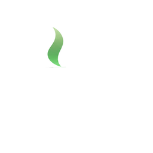
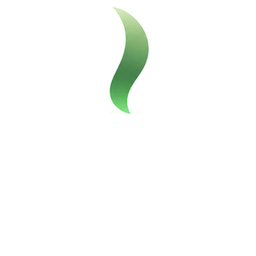
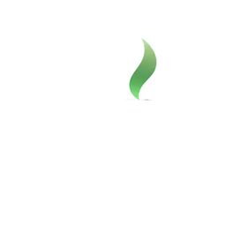

Procesador
—
Lo devuelve la app
Interfaz
La descarga publicada sigue siendo la beta 1.9.4. Esta ventana enseña la interfaz de la beta 1.16.0, con sus textos. Los botones no instalan, no descargan y no se conectan. Las respuestas son de ejemplo. Esta simulación no calcula velocidades.
Lo que aún no está en la 1.9.4 lleva la etiqueta «En la próxima versión pública».



Sopa comprueba tu equipo y solo te ofrece lo que de verdad funciona en él.
Procesador
—
Lo devuelve la app
Memoria RAM
—
GB libres
Tarjeta gráfica
—
Driver y capacidad, o «Sin GPU NVIDIA»
Memoria de vídeo
—
GB libres, o vacío
CUDA
—
Lista para entrenar, o no disponible
Disco libre
—
Sin ruta de usuario
En la app, estos seis datos salen de tu equipo. Esta simulación no los rellena y no inventa núcleos, gigabytes ni el nombre de la gráfica.
Qué está probado de verdad. «verificado»: comprobado en la máquina de referencia (MSI GTX 1650 Max-Q 4 GB, Windows 11). «ci»: comprobado solo en la integración continua (Windows/Linux sin GPU). «pendiente»: aún sin probar en un equipo real.
| Función | Estado |
|---|---|
| Detección de hardware (CPU, RAM, GPU, VRAM, driver, CUDA, disco) | Verificado en equipo real |
| Aviso de driver NVIDIA antiguo y uso del procesador | Probado en pruebas automáticas |
| Comprobación de WebView2 | Verificado en equipo real |
| Instalación del motor (torch cu126) desde la app | Verificado en equipo real |
| Entrenar con tus ejemplos en la gráfica (QLoRA; Qwen2.5 0.5B, 1.5B y 3B) | Verificado en equipo real |
| Exportar a GGUF q4_k_m | Verificado en equipo real |
| Chat local en GPU con llama-server | Verificado en equipo real |
| Descarga de modelos del catálogo (comprobada por hash, cancelable y reanudable) | Verificado en equipo real |
| Chat con modelos 7-8B repartidos entre GPU y RAM | Verificado en equipo real |
| Pensar antes de responder (apagado por defecto, visible a petición) | Verificado en equipo real |
| Conversaciones guardadas en el equipo | Probado en pruebas automáticas |
| Ventana de la app (pywebview): navegación, temas y pantallas | Verificado en equipo real |
| Personalización guiada desde la ventana | Pendiente de probar |
| DPO (preferencias) | Probado en pruebas automáticas |
| Carga por capas sin cuantizar | Pendiente de probar |
| Actualizaciones firmadas (buscar, descargar, verificar, instalar y volver atrás) — 0.5.0 → 0.5.1 en la MSI | Verificado en equipo real |
| Catálogo de modelos firmado actualizable sin cambiar de versión | Probado en pruebas automáticas |
| Tus documentos: el chat responde con tus PDF/Word citando fuentes (12/12 en la MSI con Qwen3 4B, Gemma 4 E4B y Qwen3 8B) | Verificado en equipo real |
| Personalización automática LoRA/QLoRA según el hardware (verificada en la MSI con Qwen2.5 0.5B) | Verificado en equipo real |
| Gestionar tus modelos: renombrar, borrar, exportar e importar .sopamodelo con SHA-256 (MSI: Qwen3 4B 2,4 GB exporta en 11 s e importa en 10 s) | Verificado en equipo real |
| Exportar e importar conversaciones (.sopachats) y guardar una como texto (.md) | Verificado en equipo real |
| Documentos a fondo: indexar una carpeta entera en segundo plano, reanudable (MSI: 209 documentos, 832 páginas, en 8 min; texto en 33 s) | Verificado en equipo real |
| Búsqueda por significado (multilingual-e5-small, local, en el procesador) combinada con palabras clave (MSI: 26/26 en los 4 primeros frente a 25/26 solo con palabras) | Verificado en equipo real |
| OCR de PDF escaneados con el OCR de Windows (MSI: 15 páginas, acentos correctos) | Verificado en equipo real |
| Resumir uno o varios documentos y compararlos, con citas [n] verificables y archivo y páginas leídas (MSI con Qwen3 4B: 50-60 s) | Verificado en equipo real |
| Barra de progreso al exportar modelos (MSI: Qwen3 4B, 2,3 GB, en 6,5 s) | Verificado en equipo real |
| Memoria: lo que Sopa recuerda de ti, editable y borrable, con «Recuerda que…» confirmado (MSI con Qwen3 4B) | Verificado en equipo real |
| Elección automática del modelo según la tarea y el equipo, con carga automática (MSI: Qwen3 4B para chat y documentos, Qwen2.5 1.5B para entrenar) | Verificado en equipo real |
| Entrenamiento sin jerga, con el detalle técnico en «Ver detalles» | Verificado en equipo real |
| Catálogo ampliado (17 modelos nuevos con especialidad; visión «próximamente») y aviso «Equipo potente» calibrado en la MSI En la próxima versión pública | Verificado en equipo real |
| Acciones en carpetas autorizadas, con vista previa, confirmación y papelera (nunca borrar para siempre) | Probado en pruebas automáticas |
| Sopa Mobile fuera de casa, con un túnel propio (claves locales, sin instalar WireGuard) | Probado en pruebas automáticas |
| Base del asistente: leer, buscar y resumir en carpetas autorizadas, con permiso por herramienta | Probado en pruebas automáticas |
En la próxima versión pública Imágenes y ver imágenes.
En la próxima versión pública Si el motor se cierra por falta de memoria, la app dice: «No hay memoria suficiente para cargar este modelo. Cierra otros programas o elige uno más pequeño.» Esta simulación no calcula si cabe.
Ejemplo de lista. Estos nombres salen del catálogo publicado; aquí no hay ninguno descargado y no se dice por qué se elegiría uno.
Puedes escribir ya: se cargará al enviar. Para usar otro, elígelo arriba y pulsa «Cargar».
En la próxima versión pública La respuesta aparece mientras se escribe, con un cursor verde al final. El razonamiento y los bloques de herramienta van aparte y no se mezclan con ese texto. Los menús y los botones no cambian.
Escribe y Sopa cargará el modelo adecuado. Nada sale de tu ordenador.
Agente activo: Chat
Buscar en la web está apagado. Uso solo los documentos de este equipo.
En la próxima versión pública Investigación.
En la próxima versión públicaUn agente trabaja en tus carpetas, con un límite de pasos. Lo que lee es contenido, no órdenes. Nada se escribe sin confirmar.
No está en este equipo. Los agentes usan el modelo del chat.
Todavía no hay ninguno. Crea el primero aquí abajo.
Aún no hay carpetas autorizadas. Se añaden en Ajustes.
Elige un agente y escribe la tarea. Esta simulación no lanza nada.
Sopa los lee y los busca aquí, en tu equipo. Nada sale de él.
La primera vez que añadas una carpeta se descargará el buscador por significado. En la app se indica el tamaño y la licencia; aquí no se inventan.
Los PDF escaneados se leen con el OCR de Windows.
En la próxima versión pública En esta pantalla no cambia nada. Solo cambia el orden de los resultados: Sopa busca a la vez por las palabras y por el significado, junta las dos listas y pone delante lo que queda bien en las dos. Si un fragmento contiene más palabras de la pregunta, pasa delante.
Añade una carpeta (apuntes, contratos, manuales…) y Sopa la indexará en segundo plano.
«Permitir desde el móvil» no está en esta pantalla. Está en Ajustes, en cada carpeta, y viene apagado.
Lo que Sopa recuerda de ti en todas las conversaciones. Lo ves, lo cambias y lo borras cuando quieras. Se queda en tu equipo.
La memoria está apagada: Sopa no la usa en el chat, pero se conserva.
También puedes decírselo en el chat: «Recuerda que…». Sopa te preguntará antes de guardarlo.
Añade aquí lo que quieras que Sopa tenga en cuenta siempre, o díselo en el chat con «Recuerda que…».
Calculado para tu equipo. «Estimado» significa que aún no lo hemos medido en un equipo real.
Aún no tienes modelos. Descarga uno del catálogo o importa uno exportado.
Ejemplo de filas, con el nombre y el tamaño publicados. Chat y Entrenar los calcula la app en tu equipo: aquí van en blanco, sin tok/s y sin un «porque». Hay una medida de un equipo, no una promesa: en un PC con RTX 5070, Qwen3 4B corre en la gráfica a unos 61 tok/s. No es la velocidad de tu ordenador.
En la próxima versión pública Si falla una descarga, la app lo dice en español y añade «Pulsa «Continuar» para reintentar.» Estos textos son de ejemplo. No se descarga nada.
Si un modelo no cabe, la app también lo dice. Los gigabytes los calcula ella; aquí van en blanco.
| Modelo | Para | Tamaño | Chat | Entrenar | Fiabilidad | Licencia | Acción |
|---|---|---|---|---|---|---|---|
| Qwen2.5 0.5B Instruct | Rápido | 0,46 GB | — | — | Verificado | Apache-2.0 | |
| Gemma 2 2B Instruct | Charlar | 1,59 GB | — | — | Estimado | Gemma | |
| Qwen2.5 VL 7B | Imágenes En la próxima versión pública | 4,36 GB | — | — | — | Apache-2.0 | Solo catálogo |
Enséñale a un modelo con tus ejemplos para que responda a tu manera. Todo se queda en tu equipo.
De un documento, de conversaciones exportadas o de un Excel. El archivo que sale ya vale para el paso 2.
Un documento (.txt, .md, .html, .pdf o .docx) se parte en textos. Unas conversaciones (.sopachats) pasan a un chat por conversación, y hace falta una respuesta al final. En un Excel, la primera fila son los nombres: pregunta y respuesta, o instrucción y respuesta, se respetan; si no, la primera columna es la pregunta y las demás la respuesta. Una sola columna se guarda como texto.
Esta simulación no llama al modelo. En un texto cuenta los párrafos separados por una línea en blanco: ese número es el de esta página, no el de la app. Un archivo con macros no se lee. PDF, Word, Excel y .sopachats no se abren aquí.
Un archivo con preguntas y la respuesta que te gustaría (CSV o JSONL); cuantos más, mejor
Elige modelo y ejemplos para ver cuánto tardará.
En la app, aquí aparece el tiempo medido o aproximado. Esta simulación no lo calcula.
La misma pregunta, primero con el modelo base y después con el personalizado. Solo cabe uno en memoria, así que van uno detrás de otro.
Esta simulación no descarga «Qwen3.5 0.8B». Si falta, el botón queda desactivado y no descarga nada solo. Las dos respuestas usan la misma temperatura, sin herramientas, sin web y sin agentes. El texto es de ejemplo: no lo ha escrito un modelo.
Preferencias de Sopa en este equipo.
Sopa solo trabaja dentro de estas carpetas. Puede leer, buscar y resumir texto, Markdown, Word, PDF y Excel, y puede proponer crear una carpeta, crear un archivo de texto o Markdown, cambiar el nombre, mover, copiar, tirar a la papelera u organizar los archivos por tipo, por fecha, por un fragmento del nombre o por duplicados. Se apartan a la carpeta Duplicados; no se borra nada. Si pides varios pasos, primero ves el plan entero, hasta 8, y cada cambio se confirma. Por defecto no hay ninguna. Cada carpeta tiene sus herramientas y puedes apagarlas. «Permitir desde el móvil» viene apagado y solo se enciende en esta pantalla. Los cambios se ven antes y nada se escribe sin tu confirmación.
En la próxima versión pública Con el interruptor apagado, el asistente, Archivos, Automatizaciones, Documentos e Investigación, desde el móvil, no usan esa carpeta. En el ordenador la carpeta sigue disponible. El interruptor en sí ya está en la beta publicada; lo nuevo es ese límite.
No hay carpetas autorizadas. Las acciones están apagadas.
Aún no hay acciones.
El registro se queda en este equipo. Sopa no lo envía a ningún sitio.
Puedes guardar un plan o una sola acción para lanzarla a una hora, cada día, cada semana, cuando aparezca un archivo en una carpeta autorizada, o con el botón. Solo funcionan con Sopa abierta. No hay Programador de tareas, ni un servicio, ni se piden permisos de administrador. Una lectura puede ir sola. Un cambio de archivos se confirma al guardarla, con el plan exacto y las carpetas ya fijadas, y solo desde este ordenador. Cada ejecución queda aquí y se puede deshacer. Como mucho, una vez cada 5 minutos y 500 cambios. Si falla 3 veces seguidas, se pausa.
Aún no hay automatizaciones. Solo funcionan con Sopa abierta.
Aún no se ha ejecutado ninguna.
El registro se queda en este equipo. Sopa no lo envía a ningún sitio.
Apagado, el chat no sale de este equipo: no hay ninguna búsqueda en la red. Encendido, puedo buscar en la web y leer una página, sin cuenta ni clave. El texto de esas páginas es un dato, no una orden.
Si el modelo se cierra al responder, Sopa puede dejar menos capas en la gráfica y recordarlo para ese modelo, esa gráfica y ese archivo. No baja de 8 capas. Tras varias cargas estables, o al día siguiente, vuelve a probar con más.
Versión instalada: —
Última búsqueda: Nunca
Catálogo de modelos: —
Se consulta GitHub sin cuenta ni identificadores. Sin conexión, Sopa funciona igual.
Sopa © 2026 Miguel Rodríguez Saiz. Software libre: GPL-3.0-or-later, sin ninguna garantía.
El texto de la licencia es la GNU GPLv3 (LICENSE).
En la app, este botón muestra los avisos de terceros. Esta simulación no los copia aquí.
El código fuente correspondiente se ofrece con el programa, según la GPL.
Controla la IA de este ordenador desde el móvil, en la misma red Wi-Fi. Fuera de casa se puede usar un túnel propio; viene apagado.
En la app, aquí aparecen el código QR y la dirección. Esta simulación no inventa ni una IP ni un nombre de equipo.
No se consulta sola. Pulsa Comprobar para preguntarle a tu router, sin salir de casa.
Si algo falla, puedes contarlo. El código es anónimo: se crea en este equipo y no lleva tu nombre ni datos del ordenador.
—
Lo que hace el motor por dentro, por si algo falla.